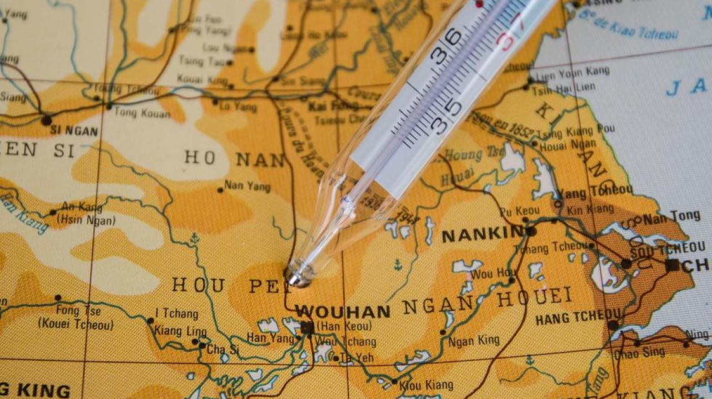
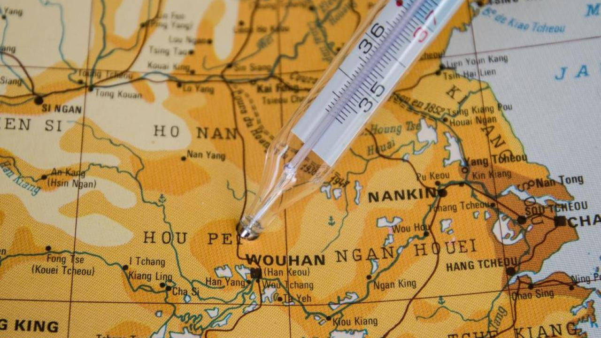
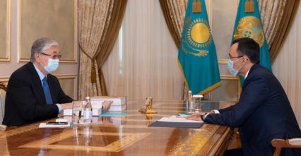

Эксперты признали возможную утечку коронавируса из лаборатории

Группа экспертов, в состав которой вошли ученые со всего мира, сообщили, что есть две версии возникновения коронавируса SARS-CoV-2.Одна из них – утечка из лаборатории.Письмо ученых опубликовано в издании Science.
По словам представителей группы, изучавшей причины возникновения пандемии, еще одна версия – зооноз, то есть передача вируса от животных человеку.
Опубликованное официальное письмо гласит, что обе версии были изучены недостаточно тщательно.
Ранее стало известно, что Всемирная Организация Здравоохранения (ВОЗ) собрала и направила в Китай группу ученых из разных стран для изучения причин появления коронавируса нового типа, который вызвал пандемию.Кстати, попасть в КНР исследователям удалось не сразу: некоторое время пришлось решать бюрократические вопросы, которые возникли в последний момент.
Эксперты из группы рассказали, что в Китае им предоставили данные и образцы, на основе которых версию утечки из лаборатории назвали маловероятной, а передачу от животных – более возможной.Тем не менее ученые считают, что данных недостаточно.Они призывают вернуться к исследованиям, при этом подчеркнув, что исследовательским лабораториям необходимо опубликовать данные, которые должны изучать независимые эксперты.
Авторы письма добавили, что в начале эпидемии многие китайские врачи, ученые и журналисты помогали собрать объективную информацию о вирусе.
В январе госсекретарь США Майк Помпео обвинил Китай в сокрытии важных данных по COVID-19, заявив, что пандемии можно было избежать.
Напомним, что в конце марта представители экспертной группы ВОЗ отклонили версию об утечке вируса из лаборатории, а передачу его от летучих мышей назвали самой вероятной из версий.
Читайте 'Курсив' там, где вам удобно.Самые актуальные новости из делового мира в Facebook и Telegram
Posted On: 2021-05-14T10:00:00


Content Date: 2021-05-14
Download Date: 2021-05-30
Document ID: L0C04CMTV